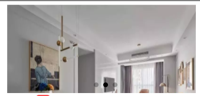

<!-- swiper box start -->
<swiper indicator-dots="true"
autoplay="true" interval="{{2000}}" duration="{{1000}}">
<block wx:for="{{swiperList}}" wx:key="*this">
<swiper-item>
<image src="{{item}}"></image>
</swiper-item>
</block>
</swiper>
<!-- swiper box end -->
